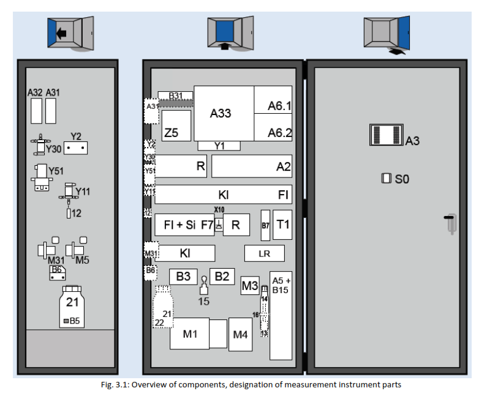
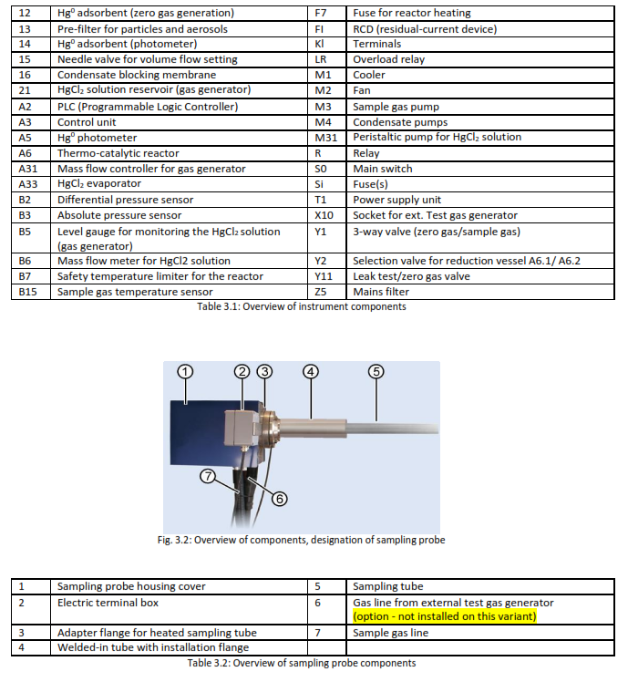

← Dashboard
PM HG ANALYZER
HM-1400 TRX 2 — Total Mercury Analyzer — Unit 7
Preventive Maintenance
PM
HG Analyzer
Data Umum
Tanggal
Work Order
Nama Operator / PIC
📖 Referensi Komponen HM-1400 TRX 2 (klik untuk buka/tutup)


3 Monthly
6 Monthly
9 Monthly
1 Yearly
2 Yearly
5 Yearly
Manual Book PM HG All Page
Manual Book PM HG Analyzer (HM-1400 TRX 2) — Semua Halaman
⬇ Download PDF
🖶 Download PDF
💾 Simpan ke Database
✕ Reset
⚠ Perhatian
Mengerti